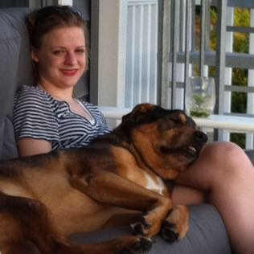

Our Story
Charlie's Chance Animal Rescue was founded in memory of Charlie. Charlie was a stray puppy, born on the Caribbean island St. Croix. It would seem that there would be no chance he could have a different life. But fate stepped in on all four feet. He was rescued and brought to the greater Philadelphia area and adopted by his furever family. He went from living in the streets to getting love and treats.
